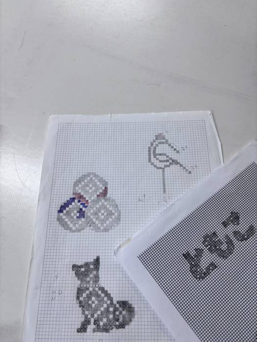
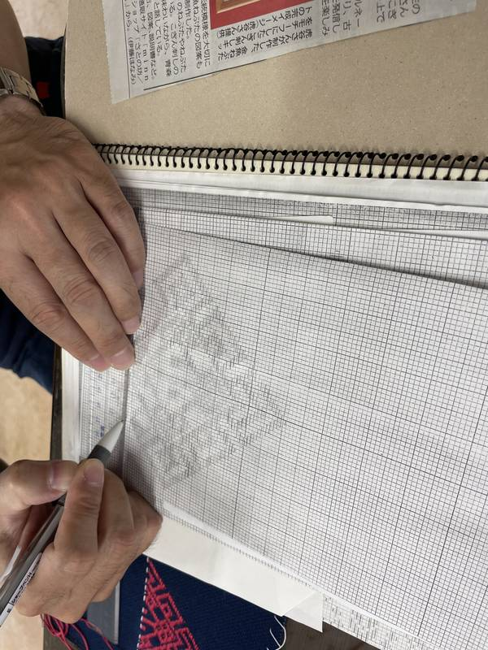
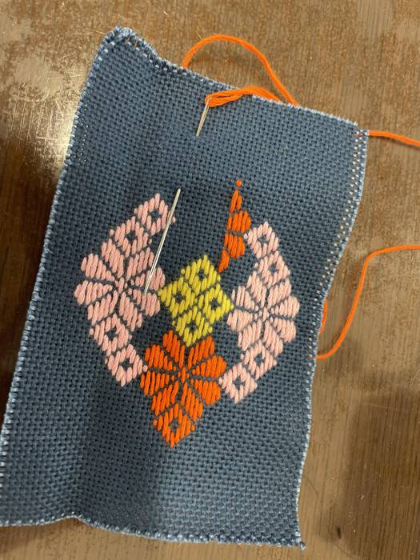
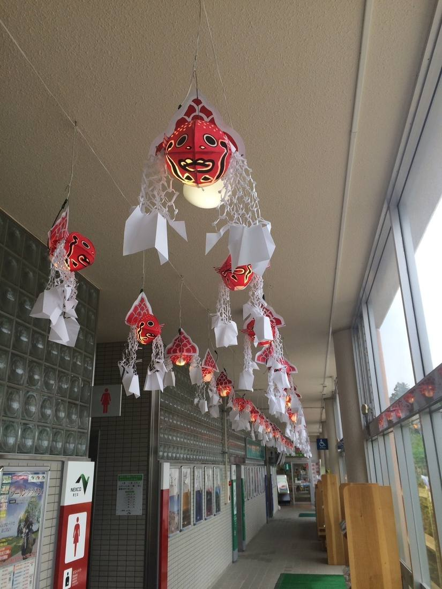

ハートスポットについて
ハートスポットは、障がいのある方が"自分らしく働ける場所"をつくる福祉事業所です。手仕事・創作活動・地域とのつながりを大切にし、一人ひとりの得意を活かしたモノづくりに取り組んでいます。
「福祉 × 手仕事 × あおもりの伝統」を合言葉に、地域に愛される商品づくりを目指しています。
- 運営法人
特定非営利活動法人ハートスポット
- 指定
平成26年1月、青森市より指定障害福祉サービス事業所（就労継続支援B型）に指定
- 対象
知的障がい・精神障がい・発達障がいの特性がある方、難病のある方（精神障害者保健福祉手帳・療育手帳をお持ちの方）
- 定員
20名（現在の利用者19名：男性6名・女性13名）
こぎん刺しへの取り組み
青森の伝統文化として受け継がれてきた「こぎん刺し」。特にこぎん刺し制作では、利用者さんの集中力・丁寧さ・色合わせのセンスが光り、世界にひとつだけの温かい作品が生まれています。小物から生活用品まで幅広い商品を製作しています。



地域に届いています ― 金魚ねぶた

一個のおおよそのサイズは高さ50cm・直径20cm。津軽SAのトイレ棟の廊下（延長25m）の天井から、上下線あわせて100個の金魚ねぶたを飾っています。ハートスポットの手仕事が、実際に多くの方の目に触れる形で地域に届いている一例です。